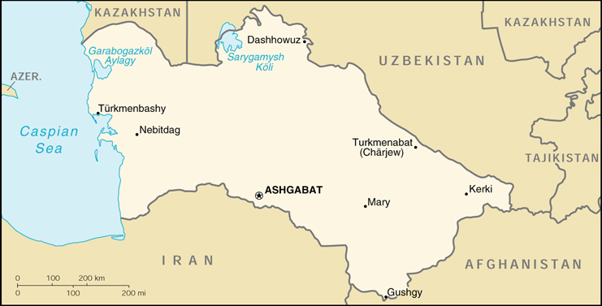

{kind=link}


| Turkmenistan |
|
|
 | |
| Introduction |
Background: Annexed by Russia between 1865 and 1885, Turkmenistan became a Soviet republic in 1925. It achieved its independence upon the dissolution of the USSR in 1991. President NIYAZOV retains absolute control over the country and opposition is not tolerated. Extensive hydrocarbon/natural gas reserves could prove a boon to this underdeveloped country if extraction and delivery projects can be worked out.
| Geography |
Location: Central Asia, bordering the Caspian Sea, between Iran and Kazakhstan
Geographic coordinates: 40 00 N, 60 00 E
Map references: Commonwealth of Independent States
Area:
total:
488,100 sq km
land:
488,100 sq km
water:
0 sq km
Area - comparative: slightly larger than California
Land boundaries:
total:
3,736 km
border countries:
Afghanistan 744 km, Iran 992 km, Kazakhstan 379 km, Uzbekistan 1,621 km
Coastline:
0 km
note:
Turkmenistan borders the Caspian Sea (1,768 km)
Maritime claims: none (landlocked)
Climate: subtropical desert
Terrain: flat-to-rolling sandy desert with dunes rising to mountains in the south; low mountains along border with Iran; borders Caspian Sea in west
Elevation extremes:
lowest point:
Vpadina Akchanaya -81 m (note - Sarygamysh Koli is a lake in north eastern Turkmenistan whose water levels fluctuate widely; at its shallowest, its level is -110 m; it is presently at -60 m, 20 m above Vpadina Akchanaya)
highest point:
Ayrybaba 3,139 m
Natural resources: petroleum, natural gas, coal, sulfur, salt
Land use:
arable land:
3%
permanent crops:
0%
permanent pastures:
63%
forests and woodland:
8%
other:
26% (1993 est.)
Irrigated land: 13,000 sq km (1993 est.)
Natural hazards: NA
Environment - current issues: contamination of soil and groundwater with agricultural chemicals, pesticides; salination, water-logging of soil due to poor irrigation methods; Caspian Sea pollution; diversion of a large share of the flow of the Amu Darya into irrigation contributes to that river's inability to replenish the Aral Sea; desertification
Environment - international agreements:
party to:
Biodiversity, Climate Change, Climate Change-Kyoto Protocol, Desertification, Hazardous Wastes, Ozone Layer Protection
signed, but not ratified:
none of the selected agreements
Geography - note: landlocked
| People |
Population: 4,518,268 (July 2000 est.)
Age structure:
0-14 years:
38% (male 887,088; female 850,384)
15-64 years:
58% (male 1,277,176; female 1,321,465)
65 years and over:
4% (male 69,383; female 112,772) (2000 est.)
Population growth rate: 1.87% (2000 est.)
Birth rate: 28.88 births/1,000 population (2000 est.)
Death rate: 9.04 deaths/1,000 population (2000 est.)
Net migration rate: -1.11 migrant(s)/1,000 population (2000 est.)
Sex ratio:
at birth:
1.05 male(s)/female
under 15 years:
1.04 male(s)/female
15-64 years:
0.97 male(s)/female
65 years and over:
0.62 male(s)/female
total population:
0.98 male(s)/female (2000 est.)
Infant mortality rate: 73.3 deaths/1,000 live births (2000 est.)
Life expectancy at birth:
total population:
60.91 years
male:
57.29 years
female:
64.71 years (2000 est.)
Total fertility rate: 3.63 children born/woman (2000 est.)
Nationality:
noun:
Turkmen(s)
adjective:
Turkmen
Ethnic groups: Turkmen 77%, Uzbek 9.2%, Russian 6.7%, Kazakh 2%, other 5.1% (1995)
Religions: Muslim 89%, Eastern Orthodox 9%, unknown 2%
Languages: Turkmen 72%, Russian 12%, Uzbek 9%, other 7%
Literacy:
definition:
age 15 and over can read and write
total population:
98%
male:
99%
female:
97% (1989 est.)
| Government |
Country name:
conventional long form:
none
conventional short form:
Turkmenistan
local long form:
none
local short form:
Turkmenistan
former:
Turkmen Soviet Socialist Republic
Data code: TX
Government type: republic
Capital: Ashgabat
Administrative divisions:
5 welayatlar (singular - welayat): Ahal Welayaty (Ashgabat), Balkan Welayaty (Nebitdag), Dashhowuz Welayaty (formerly Tashauz), Lebap Welayaty (Charjew), Mary Welayaty
note:
administrative divisions have the same names as their administrative centers (exceptions have the administrative center name following in parentheses)
Independence: 27 October 1991 (from the Soviet Union)
National holiday: Independence Day, 27 October (1991)
Constitution: adopted 18 May 1992
Legal system: based on civil law system
Suffrage: 18 years of age; universal
Executive branch:
chief of state:
President and Chairman of the Cabinet of Ministers Saparmurat NIYAZOV (since 27 October 1990, when the first direct presidential election occurred); note - the president is both the chief of state and head of government
head of government:
President and Chairman of the Cabinet of Ministers Saparmurat NIYAZOV (since 27 October 1990, when the first direct presidential election occurred); note - the president is both the chief of state and head of government
cabinet:
Council of Ministers appointed by the president
note:
NIYAZOV's term in office was extended indefinitely on 28 December 1999 by the Assembly (Majlis) during a session of the People's Council (Halk Maslahaty)
elections:
president elected by popular vote for a five-year term; election last held 21 June 1992 (next scheduled to be held NA); note - President NIYAZOV was unanimously approved as president for life by the Assembly on 28 December 1999); deputy chairmen of the cabinet of ministers are appointed by the president
election results:
Saparmurat NIYAZOV elected president without opposition; percent of vote - Saparmurat NIYAZOV 99.5%
Legislative branch:
under the 1992 constitution, there are two parliamentary bodies, a unicameral People's Council or Halk Maslahaty (more than 100 seats, some of which are elected by popular vote and some of which are appointed; meets infrequently) and a unicameral Assembly or Majlis (50 seats; members are elected by popular vote to serve five-year terms)
elections:
People's Council - NA; Assembly - last held 12 December 1999 (next to be held NA 2004)
election results:
Assembly - percent of vote by party - NA; seats by party - NA; note - all 50 elected officials preapproved by President NIYAZOV; most are from the DPT
Judicial branch: Supreme Court, judges are appointed by the president
Political parties and leaders:
Democratic Party of Turkmenistan or DPT [Saparmurat NIYAZOV]
note:
formal opposition parties are outlawed; unofficial, small opposition movements exist underground or in foreign countries
International organization participation: CCC, CIS, EAPC, EBRD, ECE, ECO, ESCAP, FAO, IBRD, ICAO, ICRM, IDB, IFC, IFRCS, ILO, IMF, IMO, Intelsat (nonsignatory user), IOC, IOM (observer), ISO (correspondent), ITU, NAM, OIC, OPCW, OSCE, PFP, UN, UNCTAD, UNESCO, UPU, WFTU, WHO, WIPO, WMO, WToO, WTrO (observer)
Diplomatic representation in the US:
chief of mission:
Ambassador Halil UGUR
chancery:
2207 Massachusetts Avenue NW, Washington, DC 20008
telephone:
[1] (202) 588-1500
FAX:
[1] (202) 588-0697
Diplomatic representation from the US:
chief of mission:
Ambassador Steven R. MANN
embassy:
9 Pushkin Street, Ashgabat
mailing address:
use embassy street address
telephone:
[9] (9312) 35-00-45, 35-00-46, 35-00-42, 51-13-06, Tie Line [8] 962-0000
FAX:
[9] (9312) 51-13-05
Flag description: green field with a vertical red stripe near the hoist side, containing five carpet guls (designs used in producing rugs) stacked above two crossed olive branches similar to the olive branches on the UN flag; a white crescent moon and five white stars appear in the upper corner of the field just to the fly side of the red stripe
| Economy |
Economy - overview: Turkmenistan is largely desert country with nomadic cattle raising, intensive agriculture in irrigated oases, and huge gas and oil resources. One-half of its irrigated land is planted in cotton, making it the world's tenth largest producer. It also possesses the world's fifth largest reserves of natural gas and substantial oil resources. Until the end of 1993, Turkmenistan had experienced less economic disruption than other former Soviet states because its economy received a boost from higher prices for oil and gas and a sharp increase in hard currency earnings. In 1994, Russia's refusal to export Turkmen gas to hard currency markets and mounting debts of its major customers in the former USSR for gas deliveries contributed to a sharp fall in industrial production and caused the budget to shift from a surplus to a slight deficit. With an authoritarian ex-communist regime in power and a tribally based social structure, Turkmenistan has taken a cautious approach to economic reform, hoping to use gas and cotton sales to sustain its inefficient economy. Privatization goals remain limited. Turkmenistan is working hard to open new gas export channels through Iran and Turkey to Europe, but these will take many years to realize. In 1998-99, Turkmenistan faced revenue shortfalls due to the continued lack of adequate export routes for natural gas and obligations on extensive short-term external debt. Prospects in the near future are discouraging because of widespread internal poverty and the burden of foreign debt. IMF assistance would seem to be necessary, yet the government is not as yet ready to accept IMF requirements. Turkmenistan's 1999 deal to ship 20 billion cubic meters (bcm) of natural gas through Russia's Gazprom will help alleviate the 2000 fiscal shortfall, but will not make up for the absence of meaningful progress in economic reform.
GDP: purchasing power parity - $7.7 billion (1999 est.)
GDP - real growth rate: 9% (1999 est.)
GDP - per capita: purchasing power parity - $1,800 (1999 est.)
GDP - composition by sector:
agriculture:
10%
industry:
62%
services:
28% (1997 est.)
Population below poverty line: NA%
Household income or consumption by percentage share:
lowest 10%:
2.7%
highest 10%:
26.9% (1993)
Inflation rate (consumer prices): 30% (1999 est.)
Labor force: 2.34 million (1996)
Labor force - by occupation: agriculture and forestry 44%, industry and construction 19%, other 37% (1996)
Unemployment rate: NA%
Budget:
revenues:
$521 million
expenditures:
$548 million, including capital expenditures of $83 million (1996 est.)
Industries: natural gas, oil, petroleum products, textiles, food processing
Industrial production growth rate: NA%
Electricity - production: 8.745 billion kWh (1998)
Electricity - production by source:
fossil fuel:
99.94%
hydro:
0.06%
nuclear:
0%
other:
0% (1998)
Electricity - consumption: 5.453 billion kWh (1998)
Electricity - exports: 2.74 billion kWh (1998)
Electricity - imports: 60 million kWh (1998)
Agriculture - products: cotton, grain; livestock
Exports: $1.1 billion (1999 est.)
Exports - commodities: oil and gas 55%, cotton 22% (1998)
Exports - partners: Iran, Turkey, Russia, Kazakhstan, Tajikistan, Azerbaijan
Imports: $1.25 billion (1999 est.)
Imports - commodities: machinery and equipment 45%, chemicals, foodstuffs (1998)
Imports - partners: Ukraine, Turkey, Russia, Germany, US, Kazakhstan, Uzbekistan
Debt - external: $2.1 billion (1999 est.)
Economic aid - recipient: $27.2 million (1995)
Currency: 1 Turkmen manat (TMM) = 100 tenesi
Exchange rates: Turkmen manats per US$1 - 5,200 (January 2000), 5,350 (January 1999), 4,070 (January 1997), 2,400 (January 1996)
Fiscal year: calendar year
| Communications |
Telephones - main lines in use: 320,000 (1995)
Telephones - mobile cellular: NA
Telephone system:
poorly developed
domestic:
NA
international:
linked by cable and microwave radio relay to other CIS republics and to other countries by leased connections to the Moscow international gateway switch; a new telephone link from Ashgabat to Iran has been established; a new exchange in Ashgabat switches international traffic through Turkey via Intelsat; satellite earth stations - 1 Orbita and 1 Intelsat
Radio broadcast stations: AM 16, FM 8, shortwave 2 (1998)
Radios: 1.225 million (1997)
Television broadcast stations: 3 (much programming relayed from Russia and Turkey) (1997)
Televisions: 820,000 (1997)
Internet Service Providers (ISPs): NA
| Transportation |
Railways:
total:
2,187 km
broad gauge:
2,187 km 1.520-m gauge (1996 est.)
Highways:
total:
24,000 km
paved:
19,488 km (these roads are said to be hard-surfaced, meaning that some are paved and some are all-weather gravel surfaced)
unpaved:
4,512 km (1996 est.)
Waterways: the Amu Darya is an important inland waterway
Pipelines: crude oil 250 km; natural gas 4,400 km
Ports and harbors: Turkmenbashi
Merchant marine:
total:
1 ship (1,000 GRT or over) totaling 1,896 GRT/3,389 DWT
ships by type:
petroleum tanker 1 (1999 est.)
Airports: 64 (1994 est.)
Airports - with paved runways:
total:
22
2,438 to 3,047 m:
13
1,524 to 2,437 m:
8
914 to 1,523 m:
1 (1994 est.)
Airports - with unpaved runways:
total:
42
914 to 1,523 m:
7
under 914 m:
35 (1994 est.)
| Military |
Military branches: Ministry of Defense (Army, Air and Air Defense, Navy, Border Troops, and Internal Troops), National Guard
Military manpower - military age: 18 years of age
Military manpower - availability:
males age 15-49:
1,141,227 (2000 est.)
Military manpower - fit for military service:
males age 15-49:
926,160 (2000 est.)
Military manpower - reaching military age annually:
males:
46,487 (2000 est.)
Military expenditures - dollar figure: $90 million (FY99)
Military expenditures - percent of GDP: 3.4% (FY99)
| Transnational Issues |
Disputes - international: Caspian Sea boundaries are not yet determined among Azerbaijan, Iran, Kazakhstan, Russia, and Turkmenistan
Illicit drugs: limited illicit cultivator of opium poppy, mostly for domestic consumption; limited government eradication program; increasingly used as transshipment point for illicit drugs from Southwest Asia to Russia and Western Europe; also a transshipment point for acetic anhydride destined for Afghanistan